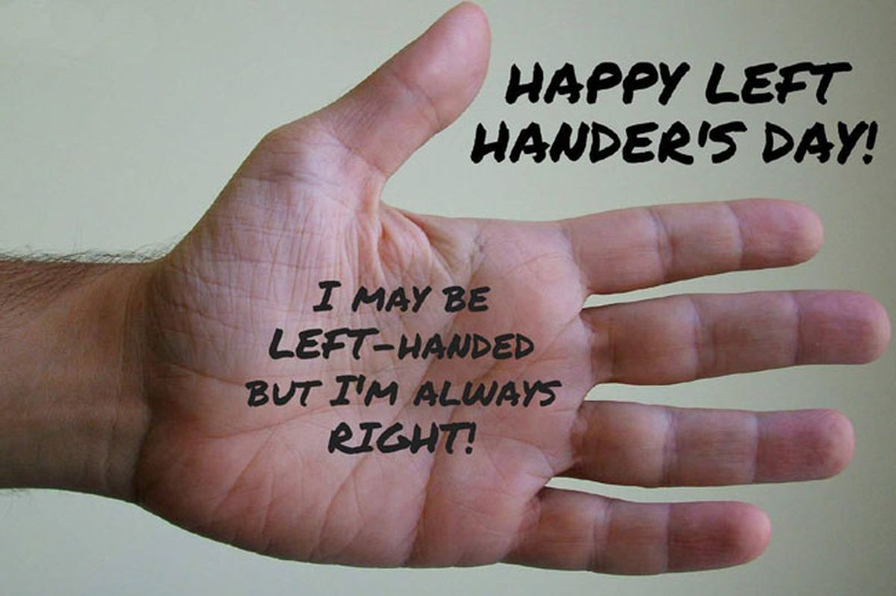

INTERNATIONAL LFET HANDERS DAY
Why is INTERNATIONAL left handers day celebrated?
Dean R. Campbell, the founder of Left – handers International Inc. in 1976 observed “sinistrality”. Since that day on 13th August every year is been declared as International Left handers day globally.
Indeed every year, left handers are dominated by right handers. Thereby to raise awareness about the issues that lefties face every day this day is been celebrated since then.
According to some theories, 10% people of the world are lefties with men more likely being so. There are bundles of big leaders, cricketers, actors are lefties. Some of them include -
Sachin Tendulkar, Amitabh Bachchan, Rajinikanth, Narendra Modi and many more.
Other famous left handed people
includes Sir Issac Newton, Napoleon Bonaparte, formerUS President Barack Obama.
What makes Left handed people Unique?
While I tell you that our left handed friends are normal as right handed people are, but first let me take you all to the history where history was not
kind to our left handed mates. In the middle ages, if you are a left handed, you were summoned of being a witch.
Contrarily in 18thand 19th centuries, left handed children were forced to use their right hands in schools. Hence, history was not so peaceful for left handed people.
Here comes some interesting yet surprising facts about left handed people –
1) They are highly flexible – Almost every instrument is designed for right handed people. Therefore, left handed people have to adapt
those less ideal situations throughout their lives. Hence making them more flexible.
2) They remember events better than facts – This for sure makes their memories special as the way they use their brain to think events.
3) They are better in sports and fighting – Lefties are a game changer in sports as they can adapt to any situation immediately as well as
they can swing left hooks on you anytime.
4) Lefties are more common in twins – According to a theory, 21% twins are lefties.
5) They are often more creative – As the study tells that left handed people can use their both side of brain’s hemispheres.
Thus giving them advantage over right handed people.

PSYCHOLOGISTS EXPLAIN HOW LEFT HANDED PEOPLE WORK DIFFRENTLY?
Juggling between different labels which our society gave to the disadvantages they felt, left handed people
have time and again proved themselves
Whether it’s making quick decisions or travelling between the
two extremely opposite spheres of our brain or being better in sports or organising emotions differently or being more and differently creative left handed people have it all to be called as
the "normal" or the "extraordinary" beings
Recently University of Toledo psychologist Stephen Christman explained in Scientific American, there’s almost no evidence to suggest that
lefties are at any sort of physical or psychological disadvantage.
For one thing, lefties have comprised roughly 10 percent to 15 percent of the general population for many thousands of years. The fact that the trait has remained stable over many generations
suggests that left-handedness is not an evolutionary weakness, as many psychologists of the past believed.
But left handedness does come with certain physiological and neurological differences
(as I stated above) but these difference make them no different from us or from the mere idea of being "normal".